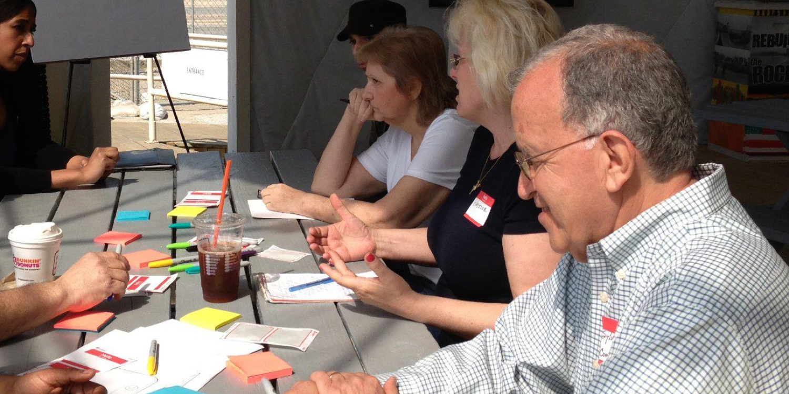
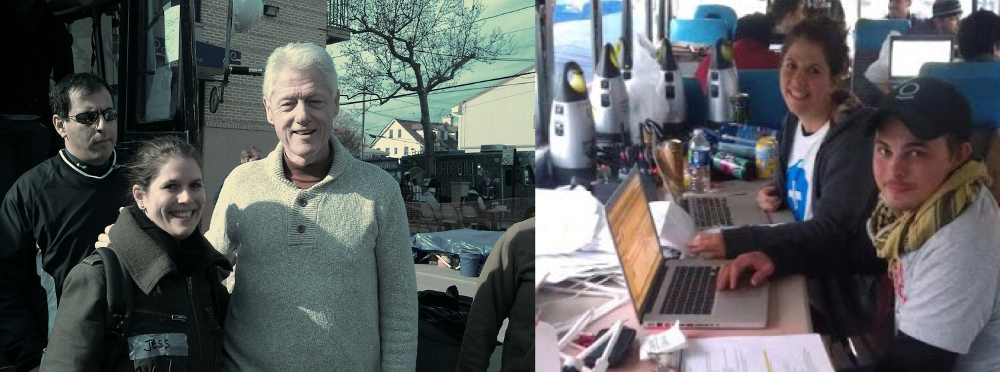
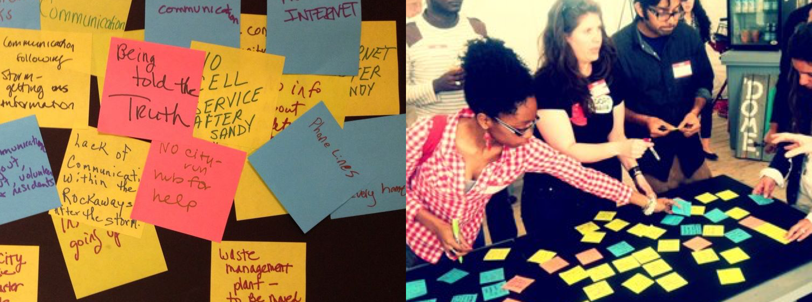
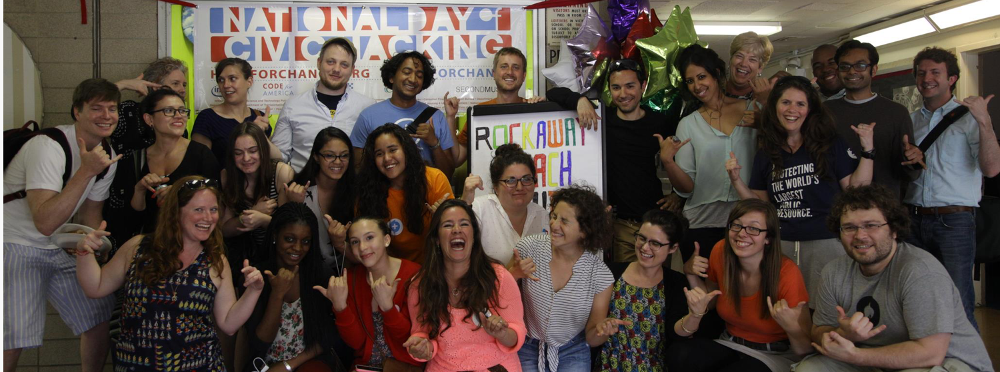

Rockaway Hack Jams After Hurricane Sandy

Challenge
Local residents of the superstorm Sandy affected community in Rockaway Beach, NY want to be involved in rebuilding - by helping themselves.
Engagement Strategy
Co-create hack jams,learning labs, and, prototype rebuilding opportunities.
Design Strategy
Up-level prototypes to create emergency preparedness tools.
Solution
Create a crisis response system that builds on top of existing technology used by community based, grassroot and established relief organizations to streamline communications and leverage data in order to develop a peer recognition system that can be used as part of an Emergency Response Kit for cities.
Process
After losing contact with my family who decided to ride out the storm by remaining at their home, I took the most terrifying ride of my life and drove through fallen trees and unmanned bridges to find them completely traumatized in our destroyed home, but thankfully, safe. After helping them, I set up a website that matched those who needed help with volunteers. I coordinated over 1,000 responders in conjunction with Team Rubicon, Palantir Technologies and other grassroot organizations.

Right after the hurricane I worked to match those who needed help with those willing to offer it, by creating a database and then coordinating with Team Rubicon.

I organized a series of community hack jams to focus on proactive rebuilding.

For the National Day of Civic Hacking we convened technologists, locals affected by the hurricane and volunteers to hack on solutions for a resilient future.